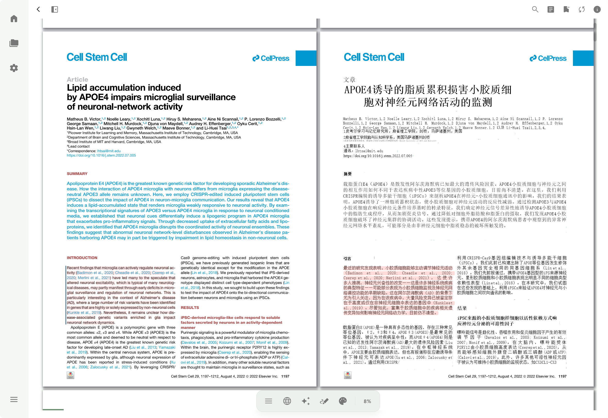

Getting started
OtterPad is an open-source academic reader and library manager for Android, Windows, and macOS.
This guide starts with importing a PDF, then covers reflow, translation, figures, AI chat, and keeping your library in sync.
You can start by importing and reading a PDF. Reflow requires an OCR service; translation and chat require an AI provider and model. These are configured separately.
Installation
Open GitHub Releases and choose the package for your device and architecture. You can back up your library in the app before upgrading.
| Platform | Package |
|---|---|
| Android | Choose arm64-v8a for modern devices, or armeabi-v7a for older 32-bit devices. |
| Windows | x64 · Installer or portable ZIP |
| macOS | DMG · Apple silicon |
The macOS build is for Apple silicon and is unsigned. Allow it in Privacy & Security on first launch. Linux is not supported yet.
View GitHub ReleasesYour first paper
Import a PDF
Use the import action in the library to select a local PDF, then open it. Start in PDF mode to read the original layout.
Set up OCR and extract the content
In OCR settings, choose PaddleOCR or MinerU and enter the service token. Return to the paper and extract its content to use reflow and extracted figures.
Choose how to read
Switch between the original PDF and reflow. To read a translation, add a provider and model in AI settings, then translate the paper and use bilingual view.
Reading & translation
PDF mode preserves pages and layout. Reflow creates continuous paragraphs for smaller screens. On desktop, you can read the original and translation side by side.

Paragraph translation & bilingual reading
Translation works paragraph by paragraph and protects formulas, code blocks, and citation markers. Completed translations are cached, and unfinished paragraphs can be retried.
Adjust font size, typeface, and theme in reading appearance settings. Highlight text, add annotations, and navigate sections through the outline.
Figures & tables
After extraction, open images and tables from the figure list, zoom in, and use the available copy or share actions.
Extraction depends on the PDF and OCR service. Check the original page when verifying captions, values, or the relationship between a figure and its text.
Full-text AI chat
Add OpenAI, Anthropic, Google, or a compatible provider in AI settings, configure the connection, and select a model. After extracting the paper, open chat in the reader to ask questions about it.
Try “How did the authors set up the control group?” or “Which conclusion does Figure 2 support?” A specific question makes it easier to check the answer against the paper.
Chat uses extracted text and figures as context, but model responses can still be wrong. Check the source before citing a conclusion.
Library
Search and resolve metadata through DOI, PubMed, Crossref, Semantic Scholar, and other sources to fill in titles, authors, and journals.
Organize topics with categories and tags, and find papers by their covers and reading progress. With an AI provider configured, you can also use automatic file naming.
Sync & backup
Zotero
Configure a Zotero API key in data management to sync your library. You can also import from an existing local Zotero library.
S3 / WebDAV
Choose S3 or WebDAV in data management, configure your storage, and run a backup or restore. Enable automatic backups if you want a regular schedule.
Services & data
Different features use different data. External service calls depend on the features you use and the services you configure.
- Local reading
- Imported papers and generated reading content are stored on your device.
- OCR
- Document extraction sends the paper to your selected PaddleOCR or MinerU service.
- Translation & chat
- Relevant text or figures are sent to your configured model provider. Availability, quotas, and costs depend on that provider.
- Sync & backup
- When enabled, data is transferred to your configured Zotero, S3, or WebDAV service.
Found an issue or something missing from this guide?
Report an issue ↗